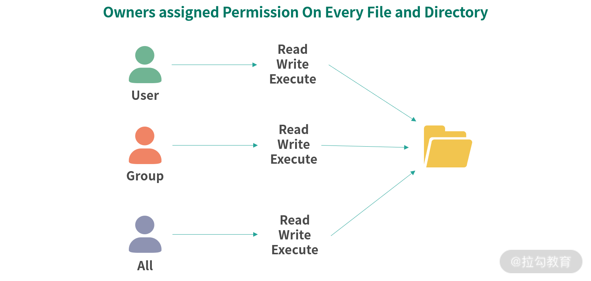
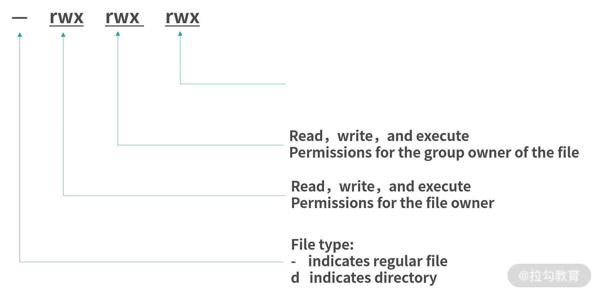
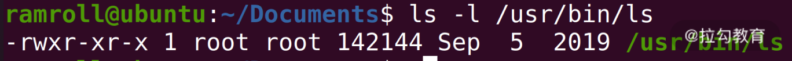
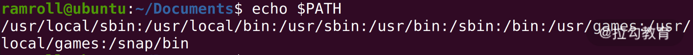
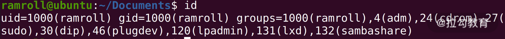
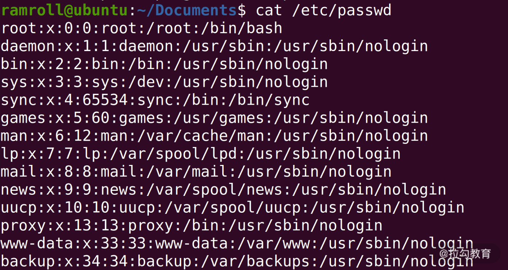
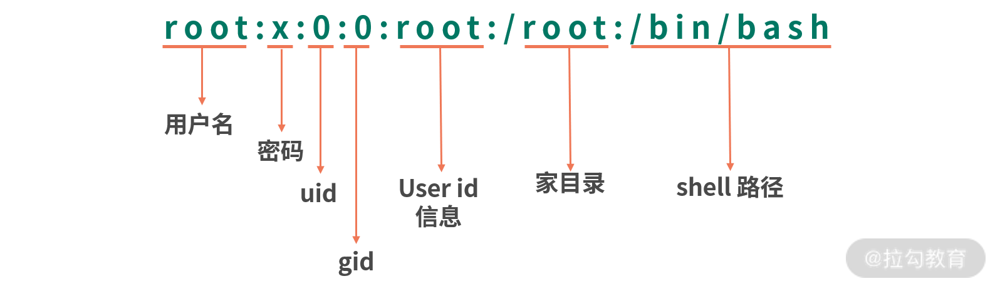

- 00 开篇词 为什么大厂面试必考操作系统？.md.html
- 00 课前必读 构建知识体系，可以这样做！.md.html
- 01 计算机是什么：“如何把程序写好”这个问题是可计算的吗？.md.html
- 02 程序的执行：相比 32 位，64 位的优势是什么？（上）.md.html
- 03 程序的执行：相比 32 位，64 位的优势是什么？（下）.md.html
- 04 构造复杂的程序：将一个递归函数转成非递归函数的通用方法.md.html
- 05 存储器分级：L1 Cache 比内存和 SSD 快多少倍？.md.html
- 05 (1) 加餐 练习题详解（一）.md.html
- 06 目录结构和文件管理指令：rm -rf 指令的作用是？.md.html
- 07 进程、重定向和管道指令：xargs 指令的作用是？.md.html
- 08 用户和权限管理指令： 请简述 Linux 权限划分的原则？.md.html
- 09 Linux 中的网络指令：如何查看一个域名有哪些 NS 记录？.md.html
- 10 软件的安装： 编译安装和包管理器安装有什么优势和劣势？.md.html
- 11 高级技巧之日志分析：利用 Linux 指令分析 Web 日志.md.html
- 12 高级技巧之集群部署：利用 Linux 指令同时在多台机器部署程序.md.html
- 12 (1)加餐 练习题详解（二）.md.html
- 13 操作系统内核：Linux 内核和 Windows 内核有什么区别？.md.html
- 14 用户态和内核态：用户态线程和内核态线程有什么区别？.md.html
- 15 中断和中断向量：Javajs 等语言为什么可以捕获到键盘输入？.md.html
- 16 WinMacUnixLinux 的区别和联系：为什么 Debian 漏洞排名第一还这么多人用？.md.html
- 16 (1)加餐 练习题详解（三）.md.html
- 17 进程和线程：进程的开销比线程大在了哪里？.md.html
- 18 锁、信号量和分布式锁：如何控制同一时间只有 2 个线程运行？.md.html
- 19 乐观锁、区块链：除了上锁还有哪些并发控制方法？.md.html
- 20 线程的调度：线程调度都有哪些方法？.md.html
- 21 哲学家就餐问题：什么情况下会触发饥饿和死锁？.md.html
- 22 进程间通信： 进程间通信都有哪些方法？.md.html
- 23 分析服务的特性：我的服务应该开多少个进程、多少个线程？.md.html
- 23 (1)加餐 练习题详解（四）.md.html
- 24 虚拟内存 ：一个程序最多能使用多少内存？.md.html
- 25 内存管理单元： 什么情况下使用大内存分页？.md.html
- 26 缓存置换算法： LRU 用什么数据结构实现更合理？.md.html
- 27 内存回收上篇：如何解决内存的循环引用问题？.md.html
- 28 内存回收下篇：三色标记-清除算法是怎么回事？.md.html
- 28 (1)加餐 练习题详解（五）.md.html
- 29 Linux 下的各个目录有什么作用？.md.html
- 30 文件系统的底层实现：FAT、NTFS 和 Ext3 有什么区别？.md.html
- 31 数据库文件系统实例：MySQL 中 B 树和 B+ 树有什么区别？.md.html
- 32 HDFS 介绍：分布式文件系统是怎么回事？.md.html
- 32 (1)加餐 练习题详解（六）.md.html
- 33 互联网协议群（TCPIP）：多路复用是怎么回事？.md.html
- 34 UDP 协议：UDP 和 TCP 相比快在哪里？.md.html
- 35 Linux 的 IO 模式：selectpollepoll 有什么区别？.md.html
- 36 公私钥体系和网络安全：什么是中间人攻击？.md.html
- 36 (1)加餐 练习题详解（七）.md.html
- 37 虚拟化技术介绍：VMware 和 Docker 的区别？.md.html
- 38 容器编排技术：如何利用 K8s 和 Docker Swarm 管理微服务？.md.html
- 39 Linux 架构优秀在哪里.md.html
- 40 商业操作系统：电商操作系统是不是一个噱头？.md.html
- 40 (1)加餐 练习题详解（八）.md.html
- 41 结束语 论程序员的发展——信仰、选择和博弈.md.html
- 捐赠
08 用户和权限管理指令： 请简述 Linux 权限划分的原则？
我看到过这样一道面试题：请简述 Linux 权限划分的原则？
这种类型的面试题也是我比较喜欢的一种题目，因为它考察的不仅是一个具体的指令，还考察了候选人技术层面的认知。
如果你对 Linux 权限有较深的认知和理解，那么完全可以通过查资料去完成具体指令的执行。更重要的是，认知清晰的程序员可以把 Linux 权限管理的知识迁移到其他的系统设计中。而且我认为，能够对某个技术形成认知的人， 同样也会热爱思考，善于总结，这样的程序员是所有团队梦寐以求的。
因此，这次我们就把这道面试题作为引子，开启今天的学习。
权限抽象
一个完整的权限管理体系，要有合理的抽象。这里就包括对用户、进程、文件、内存、系统调用等抽象。下面我将带你一一了解。
首先，我们先来说说用户和组。Linux 是一个多用户平台，允许多个用户同时登录系统工作。Linux 将用户抽象成了账户，账户可以登录系统，比如通过输入登录名 + 密码的方式登录；也可以通过证书的方式登录。
但为了方便分配每个用户的权限，Linux 还支持组 （Group）账户。组账户是多个账户的集合，组可以为成员们分配某一类权限。每个用户可以在多个组，这样就可以利用组给用户快速分配权限。
组的概念有点像微信群。一个用户可以在多个群中。比如某个组中分配了 10 个目录的权限，那么新建用户的时候可以将这个用户增加到这个组中，这样新增的用户就不必再去一个个目录分配权限。
而每一个微信群都有一个群主，Root 账户也叫作超级管理员，就相当于微信群主，它对系统有着完全的掌控。一个超级管理员可以使用系统提供的全部能力。
此外，Linux 还对文件进行了权限抽象（注意目录也是一种文件）。Linux 中一个文件可以设置下面 3 种权限：
- 读权限（r）：控制读取文件。
- 写权限（w）：控制写入文件。
- 执行权限（x）：控制将文件执行，比如脚本、应用程序等。

然后每个文件又可以从 3 个维度去配置上述的 3 种权限：
- 用户维度。每个文件可以所属 1 个用户，用户维度配置的 rwx 在用户维度生效；
- 组维度。每个文件可以所属 1 个分组，组维度配置的 rwx 在组维度生效；
- 全部用户维度。设置对所有用户的权限。

因此 Linux 中文件的权限可以用 9 个字符，3 组rwx描述：第一组是用户权限，第二组是组权限，第三组是所有用户的权限。然后用-代表没有权限。比如rwxrwxrwx代表所有维度可以读写执行。rw--wxr-x代表用户维度不可以执行，组维度不可以读取，所有用户维度不可以写入。
通常情况下，如果用ls -l查看一个文件的权限，会有 10 个字符，这是因为第一个字符代表的是文件类型。我们在 06 课时讲解“几种常见的文件类型”时提到过，有管道文件、目录文件、链接文件等等。-代表普通文件、d代表目录、p代表管道。
学习了这套机制之后，请你跟着我的节奏一起思考以下 4 个问题。
- 文件被创建后，初始的权限如何设置？
- 需要全部用户都可以执行的指令，比如
ls，它们的权限如何分配？ - 给一个文本文件分配了可执行权限会怎么样？
- 可不可以多个用户都登录
root，然后只用root账户？
你可以把以上 4 个问题作为本课时的小测验，把你的思考或者答案写在留言区，然后再来看我接下来的分析。
问题一：初始权限问题
一个文件创建后，文件的所属用户会被设置成创建文件的用户。谁创建谁拥有，这个逻辑很顺理成章。但是文件的组又是如何分配的呢？
这里 Linux 想到了一个很好的办法，就是为每个用户创建一个同名分组。
比如说zhang这个账户创建时，会创建一个叫作zhang的分组。zhang登录之后，工作分组就会默认使用它的同名分组zhang。如果zhang想要切换工作分组，可以使用newgrp指令切换到另一个工作分组。因此，被创建文件所属的分组是当时用户所在的工作分组，如果没有特别设置，那么就属于用户所在的同名分组。
再说下文件的权限如何？文件被创建后的权限通常是：
rw-rw-r--
也就是用户、组维度不可以执行，所有用户可读。
问题二：公共执行文件的权限
前面提到过可以用which指令查看ls指令所在的目录，我们发现在/usr/bin中。然后用ls -l查看ls的权限，可以看到下图所示：

第一个-代表这是一个普通文件，后面的 rwx 代表用户维度可读写和执行；第二个r-x代表组维度不可以写；第三个r-x代表所有用户可以读和执行。后面的两个root，第一个是所属用户，第二个是所属分组。
到这里你可能会有一个疑问：如果一个文件设置为不可读，但是可以执行，那么结果会怎样？
答案当然是不可以执行，无法读取文件内容自然不可以执行。
问题三：执行文件
在 Linux 中，如果一个文件可以被执行，则可以直接通过输入文件路径（相对路径或绝对路径）的方式执行。如果想执行一个不可以执行的文件，Linux 则会报错。
当用户输入一个文件名，如果没有指定完整路径，Linux 就会在一部分目录中查找这个文件。你可以通过echo $PATH看到 Linux 会在哪些目录中查找可执行文件，PATH是 Linux 的环境变量，关于环境变量，我将在 “12 | 高级技巧之集群部署中”和你详细讨论。

问题四：可不可以都 root
最后一个问题是，可不可以都root？
答案当然是不行！这里先给你留个悬念，具体原因我们会在本课时最后来讨论。
到这里，用户和组相关权限就介绍完了。接下来说说内核和系统调用权限。 内核是操作系统连接硬件、提供最核心能力的程序。今天我们先简单了解一下，关于内核的详细知识，会在“14 |用户态和内核态：用户态线程和内核态线程有什么区别？”中介绍。
内核提供操作硬件、磁盘、内存分页、进程等最核心的能力，并拥有直接操作全部内存的权限，因此内核不能把自己的全部能力都提供给用户，而且也不能允许用户通过shell指令进行系统调用。Linux 下内核把部分进程需要的系统调用以 C 语言 API 的形式提供出来。部分系统调用会有权限检查，比如说设置系统时间的系统调用。
以上我们看到了 Linux 对系统权限的抽象。接下来我们再说说权限架构的思想。
权限架构思想
优秀的权限架构主要目标是让系统安全、稳定且用户、程序之间相互制约、相互隔离。这要求权限系统中的权限划分足够清晰，分配权限的成本足够低。
因此，优秀的架构，应该遵循最小权限原则（Least Privilege)。权限设计需要保证系统的安全和稳定。比如：每一个成员拥有的权限应该足够的小，每一段特权程序执行的过程应该足够的短。对于安全级别较高的时候，还需要成员权限互相牵制。比如金融领域通常登录线上数据库需要两次登录，也就是需要两个密码，分别掌握在两个角色手中。这样即便一个成员出了问题，也可以保证整个系统安全。
同样的，每个程序也应该减少权限，比如说只拥有少量的目录读写权限，只可以进行少量的系统调用。
权限划分
此外，权限架构思想还应遵循一个原则，权限划分边界应该足够清晰，尽量做到相互隔离。Linux 提供了用户和分组。当然 Linux 没有强迫你如何划分权限，这是为了应对更多的场景。通常我们服务器上重要的应用，会由不同的账户执行。比如说 Nginx、Web 服务器、数据库不会执行在一个账户下。现在随着容器化技术的发展，我们甚至希望每个应用独享一个虚拟的空间，就好像运行在一个单独的操作系统中一样，让它们互相不用干扰。
到这里，你可能会问：为什么不用 root 账户执行程序？ 下面我们就来说说 root 的危害。
举个例子，你有一个 Mysql 进程执行在 root（最大权限）账户上，如果有黑客攻破了你的 Mysql 服务，获得了在 Mysql 上执行 Sql 的权限，那么，你的整个系统就都暴露在黑客眼前了。这会导致非常严重的后果。
黑客可以利用 Mysql 的 Copy From Prgram 指令为所欲为，比如先备份你的关键文件，然后再删除他们，并要挟你通过指定账户打款。如果执行最小权限原则，那么黑客即便攻破我们的 Mysql 服务，他也只能获得最小的权限。当然，黑客拿到 Mysql 权限也是非常可怕的，但是相比拿到所有权限，这个损失就小多了。
分级保护
因为内核可以直接操作内存和 CPU，因此非常危险。驱动程序可以直接控制摄像头、显示屏等核心设备，也需要采取安全措施，比如防止恶意应用开启摄像头盗用隐私。通常操作系统都采取一种环状的保护模式。

如上图所示，内核在最里面，也就是 Ring 0。 应用在最外面也就是Ring 3。驱动在中间，也就是 Ring 1 和 Ring 2。对于相邻的两个 Ring，内层 Ring 会拥有较高的权限，可以改变外层的 Ring；而外层的 Ring 想要使用内层 Ring 的资源时，会有专门的程序（或者硬件）进行保护。
比如说一个 Ring3 的应用需要使用内核，就需要发送一个系统调用给内核。这个系统调用会由内核进行验证，比如验证用户有没有足够的权限，以及这个行为是否安全等等。
权限包围（Privilege Bracking）
之前我们讨论过，当 Mysql 跑在 root 权限时，如果 Mysql 被攻破，整个机器就被攻破了。因此我们所有应用都不要跑在 root 上。如果所有应用都跑在普通账户下，那么就会有临时提升权限的场景。比如说安装程序可能需要临时拥有管理员权限，将应用装到/usr/bin目录下。
Linux 提供了权限包围的能力。比如一个应用，临时需要高级权限，可以利用交互界面（比如让用户输入 root 账户密码）验证身份，然后执行需要高级权限的操作，然后马上恢复到普通权限工作。这样做可以减少应用在高级权限的时间，并做到专权专用，防止被恶意程序利用。
用户分组指令
上面我们讨论了 Linux 权限的架构，接下来我们学习一些具体的指令。
查看
如果想查看当前用户的分组可以使用groups指令。
上面指令列出当前用户的所有分组。第一个是同名的主要分组，后面从adm开始是次级分组。
我先给你介绍两个分组，其他分组你可以去查资料：
- adm 分组用于系统监控，比如
/var/log中的部分日志就是 adm 分组。 - sudo 分组用户可以通过 sudo 指令提升权限。
如果想查看当前用户，可以使用id指令，如下所示：

- uid 是用户 id；
- gid 是组 id；
- groups 后面是每个分组和分组的 id。
如果想查看所有的用户，可以直接看/etc/passwd。

/etc/passwd这个文件存储了所有的用户信息，如下图所示：

创建用户
创建用户用useradd指令。
sudo useradd foo
sudo 原意是 superuser do，后来演变成用另一个用户的身份去执行某个指令。如果没有指定需要 sudo 的用户，就像上面那样，就是以超级管理员的身份。因为 useradd 需要管理员身份。这句话执行后，会进行权限提升，并弹出输入管理员密码的输入界面。
创建分组
创建分组用groupadd指令。下面指令创建一个叫作hello的分组。
sudo groupadd hello
为用户增加次级分组
组分成主要分组（Primary Group）和次级分组（Secondary Group）。主要分组只有 1 个，次级分组可以有多个。如果想为用户添加一个次级分组，可以用usermod指令。下面指令将用户foo添加到sudo分组，从而foo拥有了sudo的权限。
sudo usermod -a -G sudo foo
-a代表append，-G代表一个次级分组的清单， 最后一个foo是账户名。
修改用户主要分组
修改主要分组还是使用usermod指令。只不过参数是小写的-g。
sudo usermod -g somegroup foo
文件权限管理指令
接下来我们学习文件管理相关的指令。
查看
我们可以用ls -l查看文件的权限，相关内容在本课时前面已经介绍过了。
修改文件权限
可以用chmod修改文件权限，chmod（ change file mode bits），也就是我们之前学习的 rwx，只不过 rwx 在 Linux 中是用三个连在一起的二进制位来表示。
# 设置foo可以执行
chmod +x ./foo
# 不允许foo执行
chmod -x ./foo
# 也可以同时设置多个权限
chmod +rwx ./foo
因为rwx在 Linux 中用相邻的 3 个位来表示。比如说111代表rwx，101代表r-x。而rwx总共有三组，分别是用户权限、组权限和全部用户权限。也就是可以用1111111119 个 1 代表rwxrwxrwx。又因为11110 进制是 7，因此当需要一次性设置用户权限、组权限和所有用户权限的时候，我们经常用数字表示。
# 设置rwxrwxrwx (111111111 -> 777)
chmod 777 ./foo
# 设置rw-rw-rw-(110110110 -> 666)
chmod 666 ./foo
修改文件所属用户
有时候我们需要修改文件所属用户，这个时候会使用chown指令。 下面指令修改foo文件所属的用户为bar。
chown bar ./foo
还有一些情况下，我们需要同时修改文件所属的用户和分组，比如我们想修改foo的分组位g，用户为u，可以使用：
chown g.u ./foo
总结
这节课我们学习 Linux 的权限管理的抽象和架构思想。Linux 对用户、组、文件、系统调用等都进行了完善的抽象。之后，我们讨论了最小权限原则。最后我们对用户分组管理和文件权限管理两部分重要的指令进行了系统学习。
那么通过这节课的学习，你现在可以来回答本节关联的面试题目：请简述 Linux 权限划分的原则？
老规矩，请你先在脑海里构思下给面试官的表述，并把你的思考写在留言区，然后再来看我接下来的分析。
【解析】 Linux 遵循最小权限原则。
- 每个用户掌握的权限应该足够小，每个组掌握的权限也足够小。实际生产过程中，最好管理员权限可以拆分，互相牵制防止问题。
- 每个应用应当尽可能小的使用权限。最理想的是每个应用单独占用一个容器（比如 Docker），这样就不存在互相影响的问题。即便应用被攻破，也无法攻破 Docker 的保护层。
- 尽可能少的
root。如果一个用户需要root能力，那么应当进行权限包围——马上提升权限（比如 sudo），处理后马上释放权限。 - 系统层面实现权限分级保护，将系统的权限分成一个个 Ring，外层 Ring 调用内层 Ring 时需要内层 Ring 进行权限校验。
© 2019 - 2023 Liangliang Lee. Powered by gin and hexo-theme-book.